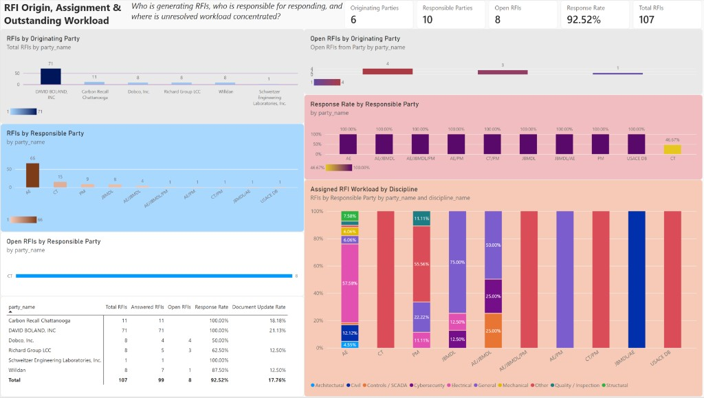

Section 1The page
The page title is RFI Origin, Assignment & Outstanding Workload. The question on the header is who is generating RFIs, who is responsible for responding, and where the unresolved workload is concentrated. The counts are the unfiltered page.

Section 2Two roles, one party list
dim_party is one list of 16 names. from_party_key is the active relationship, so a chart titled with party_name and no extra measure counts submitters. tasked_party_key is the inactive relationship. The responsible-party charts on this page turn that relationship on for the measure. The two roles do not share a name: six contractors submit, and ten government or design parties are tasked.
The received date is on every row. There is no answered date, so this page does not show days open or a response-time target.
Section 3Who submits
The cards read 6 originating parties, 10 responsible parties, 8 open RFIs, a 92.52% response rate, and 107 RFIs. DAVID BOLAND, INC submitted 71 of the 107, about 66%. All 71 are answered. The eight open RFIs were submitted by Dobco, Inc. (4), Richard Group LCC (3), and Willdan (1).
| Submitter | RFIs | Answered | Open | Response rate | Document update rate |
|---|---|---|---|---|---|
| DAVID BOLAND, INC | 71 | 71 | 0 | 100.00% | 21.13% |
| Carbon Recall Chattanooga | 11 | 11 | 0 | 100.00% | 18.18% |
| Willdan | 8 | 7 | 1 | 87.50% | 12.50% |
| Richard Group LCC | 8 | 5 | 3 | 62.50% | 12.50% |
| Dobco, Inc. | 8 | 4 | 4 | 50.00% | 0.00% |
| Schweitzer Engineering Laboratories, Inc. | 1 | 1 | 0 | 100.00% | 0.00% |
| Total | 107 | 99 | 8 | 92.52% | 17.76% |
This table follows the submitter. A 50% response rate for Dobco, Inc. means four of its eight RFIs are still open. It does not mean Dobco, Inc. was tasked to answer them.
Section 4Who is tasked
AE is tasked with 66 of 107 RFIs, about 62%, and all 66 are answered. CT is tasked with 15. Seven of those are answered and eight are open, a response rate of 46.67%. Every other tasked party is at 100%: PM 9, JBMDL 8, AE/JBMDL 4, and one each for AE/JBMDL/PM, AE/PM, CT/PM, JBMDL/AE, and USACE DB.
The open-RFI bar for the tasked party is a single bar: CT, 8. The discipline stack shows what each tasked party was given. Electrical is 38 of AE’s 66, about 58%. All 15 of CT’s RFIs are Other. General is 6 of JBMDL’s 8. Other is 5 of PM’s 9.
Section 5The eight open RFIs
All eight open RFIs are tasked to CT, and all eight are discipline Other.
| RFI | Submitter | Tasked party |
|---|---|---|
| RFI-086 | Willdan | CT |
| RFI-092 | Dobco, Inc. | CT |
| RFI-093 | Dobco, Inc. | CT |
| RFI-095 | Dobco, Inc. | CT |
| RFI-096 | Dobco, Inc. | CT |
| RFI-100 | Richard Group LCC | CT |
| RFI-106 | Richard Group LCC | CT |
| RFI-107 | Richard Group LCC | CT |
Section 6How to read it
Three different parties lead the three questions on the header. DAVID BOLAND, INC submitted the most RFIs, and none of them are open. AE holds the most assignments, and none of them are open. CT holds all eight open RFIs, at a response rate of 46.67%. Those eight were submitted by Dobco, Inc., Richard Group LCC, and Willdan.
The register and a single-RFI view are not on this page.